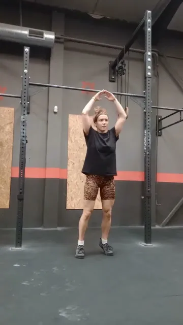
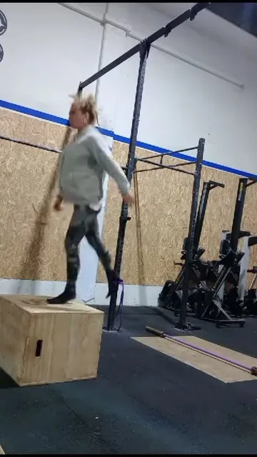
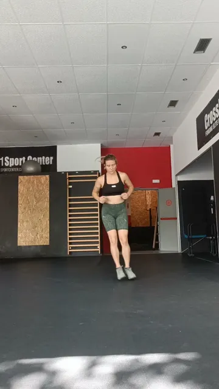
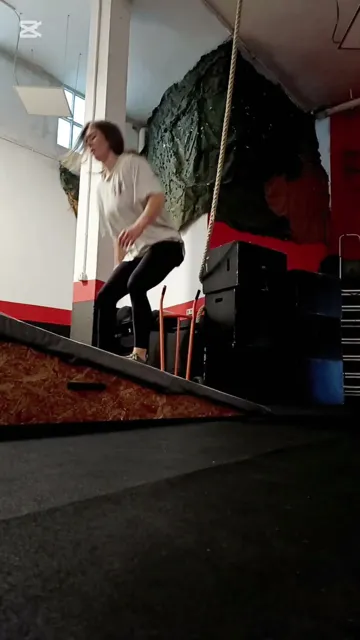
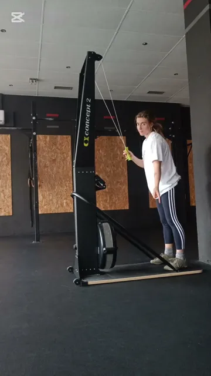

Guía · Saltos y suelo pélvico
Progresión de impactos
Aprende una progresión para volver a saltar libre.
Descargar la guía en PDF
¡A saltar libre!
Aprende una progresión para volver a saltar libre.
Descargar la guía en PDFPero no, no es «lo que hay».
Hablar de esto va de empezar a entender lo que tu cuerpo necesita para rendir sin miedo. De conocer tu conjunto abdominal, lumbar y pélvico (CALP) y entrenarlo para que pueda responder a cualquier estímulo: impacto, carga, velocidad…
Si de verdad quieres que tu deporte sea sostenible y compatible con tu realidad corporal, esto no va solo de hacer Kegels o ejercicios analíticos. Va de tener herramientas para adaptar, progresar y decidir con conocimiento y consciencia.
Los saltos dobles son uno de los movimientos que más pérdidas de orina generan. Y es una señal de que, de momento, tu cuerpo no está preparado para ese esfuerzo. ¿Por qué?
Al saltar, tu cuerpo recibe una presión intraabdominal (PIA) mucho mayor que en otros movimientos. Tanto, que hablamos de picos dobles: uno durante la fase de vuelo, por un pequeño «rebote» de la vejiga, y otro en el aterrizaje, cuando tu peso cae en vertical.
Saltar a la comba hace que todo tu peso caiga en un plano vertical, lo que genera una presión alta. Y cuando duplicamos la altura para el doble (DU), la presión aumenta todavía más.
El suelo pélvico está para sostener y amortiguar, pero la musculatura más preparada para ello está en la parte posterior e interna, no en la delantera, que es hacia donde se dirige la presión en el impacto.
Si llevas mucho tiempo con pérdidas, es normal que afrontes los saltos con tensión, miedo o desconfianza. Y eso afecta directamente a cómo gestionas la presión.
Hay variables clave que aumentan o reducen el estímulo sobre tu CALP. Combínalas y verás cuánto cambia. Prueba el simulador:
Y además: superficies blandas o inestables.
Te lo dejo desglosado para que lo apliques directamente. Ve marcando lo que ya dominas: tu progreso se queda guardado en este dispositivo.
Tip: puedes combinar variables según la progresión. Esto es solo un ejemplo: aquí puedes aplicar tu creatividad y encontrar mil opciones más.

Aterrizaje unilateral
Aterrizaje bilateral

Impactos unilaterales sobre cajón

Aterrizaje lateral

Saltos en rampa

Saltos con SkiErg

Entrenadora especializada en mujer y entrenamiento de fuerza. Mi misión es ayudar a las mujeres a entrenar respetando su biología, rompiendo miedos y adaptando el entrenamiento a su realidad psicosocial.
El deporte está diseñado principalmente por y para hombres, y deja fuera muchas de nuestras necesidades, entre ellas abordar las disfunciones del conjunto abdominal-lumbar y suelo pélvico (CALP).
La información por sí sola no transforma, pero la consciencia sí. Ojalá esta guía te haya hecho mirar con otros ojos los saltos… y todo lo que implican para tu cuerpo.
Si este material te ha hecho pensar, si sientes que te representa, y si hasta ahora has entrenado como has podido pero quieres más herramientas… esto es solo el principio.
Si quieres ir a la raíz, individualizar tu entrenamiento y entender tu cuerpo de verdad, escríbeme:
«Estoy lista para integrar el CALP en mi entreno».
Porque no estás sola, y entrenar con seguridad y confianza sí es posible.
Un abrazo, Violeta Gil Pablo